Contenido del manual
Contenido
Tu trabajo en el sistema
Eres el puente entre las familias y los/las profesionales: confirmas los pagos para que las citas queden agendadas y mantienes ordenada la información.
Lo que puedes hacer
- Aprobar o rechazar los comprobantes de pago.
- Ver el calendario de todas las citas, agendar citas para pacientes y cancelarlas.
- Ver de un vistazo los horarios de hoy de todo el equipo profesional: cuáles están libres y cuáles ocupados.
- Poner el enlace de la reunión cuando una cita es virtual (Zoom, Microsoft Teams o Google Meet).
- Registrar, editar y habilitar o deshabilitar pacientes y profesionales.
- Crear y editar servicios, sus precios y quién los atiende.
- Aprobar los horarios que crean los/las profesionales y revisar si son presenciales o virtuales.
- Descargar recibos y exportar cualquier lista a PDF o Excel.
- Buscar y filtrar en todas las listas: pagos, recibos, pacientes, profesionales y servicios.
- Crear los horarios de cada profesional, solo si la administración habilitó esa función (capítulo 10).
Por privacidad, los reportes clínicos de las sesiones no los ve el personal administrativo: solo el/la paciente, su profesional y la administración.
El recorrido de una cita
| Estado | Qué pasó | Quién actúa |
|---|---|---|
| Guardada | El/la paciente agendó y subió su comprobante. | Tú: revisas el pago. |
| Agendada | Aprobaste el pago. La cita está confirmada. | El/la profesional atiende. |
| Asistió / No asistió | El/la profesional marcó la asistencia. | El/la profesional sube el reporte. |
| Cancelada | Alguien la canceló y el horario se liberó. | — |
Las personas y datos de las imágenes son ejemplos creados para este manual.
Ingresar y tu panel
La fundación te entrega un correo y una contraseña. Entra en aspy-web.vercel.app → Ingresar.
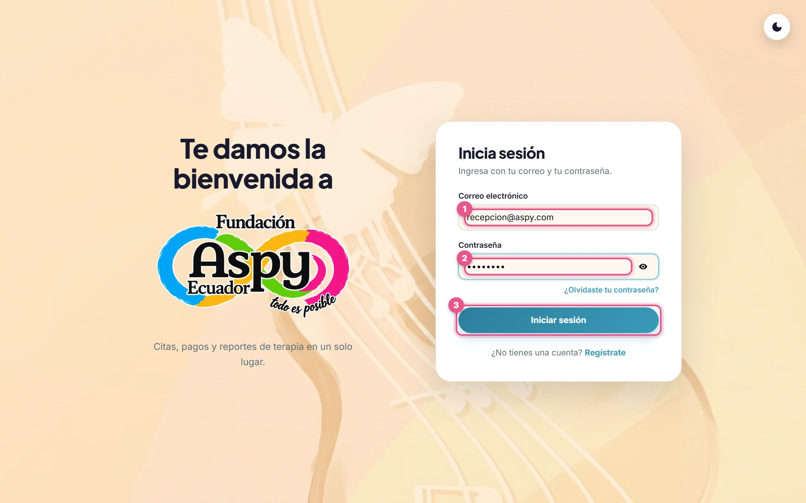
La primera vez que entres, el sistema te muestra la Política de Privacidad: léela hasta el final, marca las tres casillas de tu consentimiento (una es tu compromiso de confidencialidad con los datos de los/las pacientes) y presiona Acepto para continuar. Se pide una sola vez, y de nuevo solo si la política cambia.
La Vista General
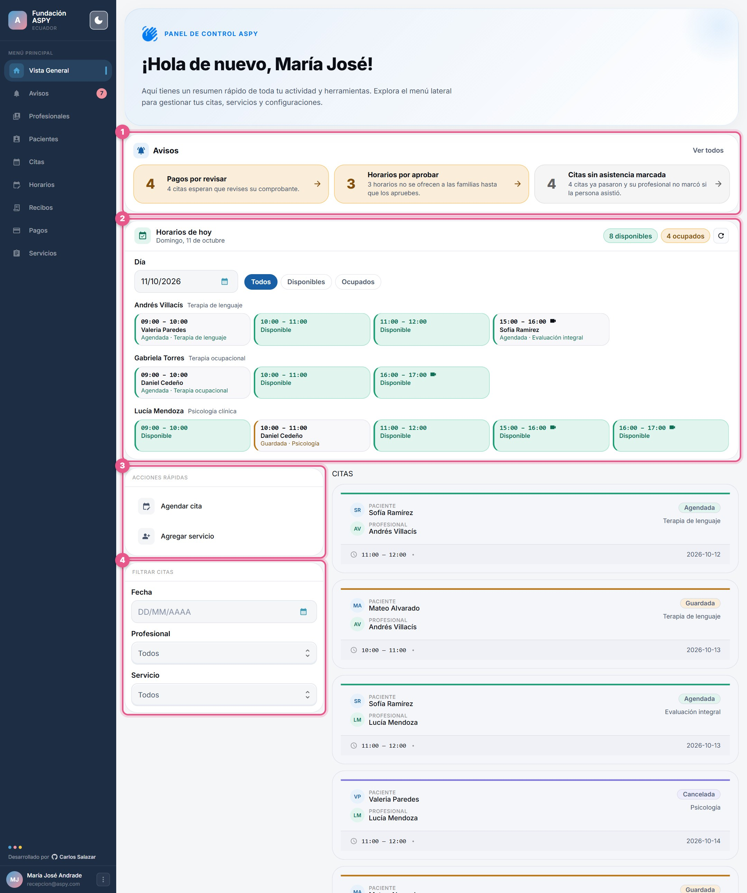
- 1 Avisos: lo que tienes por revisar en este momento: pagos, horarios por aprobar y más (se explica enseguida).
- 2 Horarios de hoy: los turnos de hoy de todo el equipo profesional, libres y ocupados (se explica más abajo).
- 3 Acciones rápidas: atajos para Agendar cita y Agregar servicio.
- 4 Filtrar citas: busca por fecha (se elige en un calendario; la ✕ la borra), profesional o servicio.
- A la derecha, la lista de citas con su estado, paciente, profesional, horario y fecha.
En el menú de la izquierda están: Avisos, Profesionales, Pacientes, Citas, Horarios, Recibos, Pagos y Servicios. En Horarios apruebas los turnos que crean los/las profesionales (capítulo 10).
Avisos: lo que tienes por revisar
Apenas entras, el sistema te dice qué te está esperando, sin que tengas que abrir cada pantalla para averiguarlo. Los números se actualizan solos.
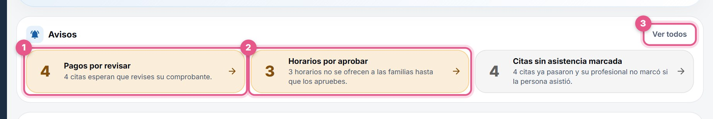
- 1 Pagos por revisar: citas que esperan que apruebes o rechaces su comprobante. La tarjeta te lleva a Pagos (capítulo 3). Cada cita por revisar es un pago por revisar: son la misma cosa.
- 2 Horarios por aprobar: turnos que crearon los/las profesionales y que las familias todavía no ven. La tarjeta te lleva a Horarios (capítulo 10).
- 3 Ver todos abre la pantalla Avisos, que también está en el menú.
Según el caso, también pueden salir:
- Citas virtuales sin enlace: citas virtuales ya agendadas a las que todavía nadie les puso el enlace de la reunión (capítulo 4).
- Citas sin asistencia marcada (en gris): citas que ya pasaron y en las que su profesional no indicó si la persona asistió. No te toca resolverlo, pero puedes recordárselo.
En amarillo está lo que te toca resolver; en gris, lo que solo te conviene saber. Cuando no queda nada, el recuadro desaparece. El número rosado junto a Avisos, en el menú, es la suma de lo que tienes por resolver (en el celular lo ves en la campana de arriba a la derecha).
Las familias y el equipo profesional también reciben avisos. Cuando apruebas o rechazas un pago, el/la paciente lo lee en su panel (si lo rechazas, con el motivo que escribiste) y su profesional se entera de si la cita quedó confirmada. Cuando apruebas un horario, su profesional recibe el aviso. Y si cambias la modalidad de una cita o la cancelas, el sistema se lo cuenta al/la paciente: aun así, conviene llamar cuando el cambio es para pronto, porque los avisos solo se ven al entrar al sistema.
Horarios de hoy
Sirve para responder rápido “¿queda un turno libre hoy?” sin revisar la agenda de cada profesional, una por una.
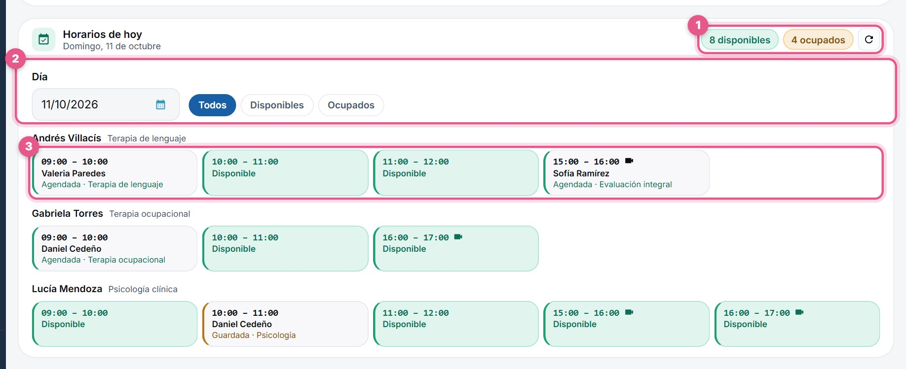
- 1 Cuántos turnos quedan disponibles y cuántos están ocupados. La flecha circular vuelve a pedir los datos, por si alguien agendó mientras tenías la pantalla abierta.
- 2 Día: hoy, o la fecha que quieras consultar (por ejemplo, mañana). Volver a hoy regresa. Los botones Todos / Disponibles / Ocupados dejan a la vista solo lo que necesitas.
- 3 Los turnos de cada profesional. En verde, los disponibles; en gris, los ocupados, con el nombre de quien tiene la cita, su estado y el servicio. La cámara junto a la hora indica que el turno es virtual.
- Los horarios por aprobar salen en amarillo, con la leyenda Por aprobar, y no cuentan como disponibles: las familias todavía no los ven. Cuántos hay en total lo dice el recuadro de Avisos, arriba.
- Un turno libre que ya empezó dice Disponible · en curso: hasta su hora de fin todavía puedes registrar ahí a alguien que llegó sin agendar (los pacientes, desde su cuenta, ya no lo ven).
- Un turno libre cuya hora ya terminó dice Quedó libre (ya pasó) y deja de contarse como disponible.
- Solo aparecen profesionales con la cuenta habilitada.
- Al final se listan las personas del equipo que no tienen ningún horario ese día.
Para agendar en un turno libre, usa Agendar cita (capítulo 5). Todas las fechas y horas del sistema son las de Ecuador, aunque el equipo o el celular tengan otra hora.
Revisar y aprobar pagos
Es la tarea más importante del día: mientras no apruebes el pago, la cita del/la paciente queda “Guardada” y no está confirmada.
- Abre “Pagos”
En la columna Aprobación, el reloj amarillo indica pagos pendientes de revisar (resaltados en la imagen). El visto verde son pagos ya aprobados.
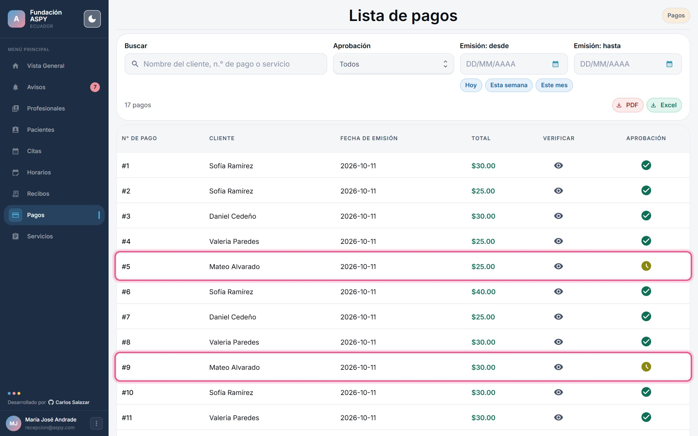
- Abre el pago
Presiona el ojo de la columna Verificar en la fila del pago.
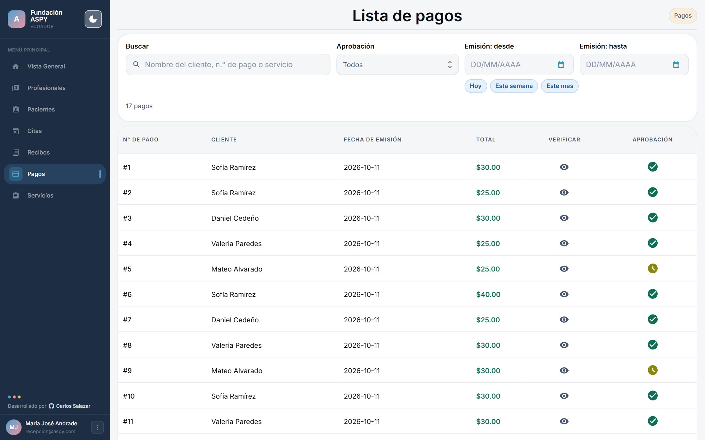
- Revisa el comprobante
Verás tres partes:
- 1 Datos del/la paciente y el botón Descargar para guardar el comprobante.
- 2 El documento adjunto: la foto o PDF que subió el/la paciente.
- 3 El recibo: servicio, total y método de pago.
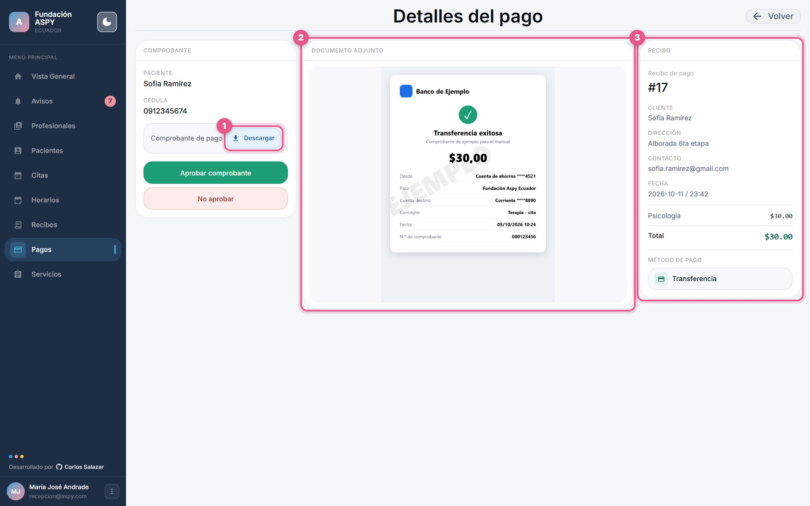
🔎Antes de aprobar, verifica en la cuenta bancaria de la fundación que el dinero llegó y que el monto coincide con el total del recibo.
🔒Los comprobantes son privados: solo los ven el/la paciente que pagó, Secretaría y la Administración, con la sesión iniciada. Si descargas uno, no lo compartas fuera de la fundación.
💡Un/a paciente puede tener hasta 10 citas esperando la revisión del pago. Si alguien te dice que el sistema ya no lo deja agendar, revisa sus pagos pendientes o agéndale tú la cita (Secretaría no tiene ese tope).
- Aprueba
Presiona Aprobar comprobante y confirma con Sí, aprobar.
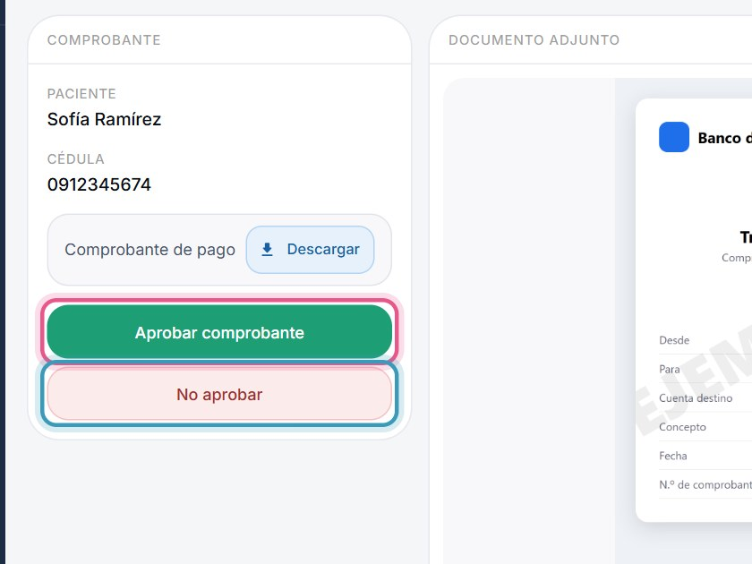
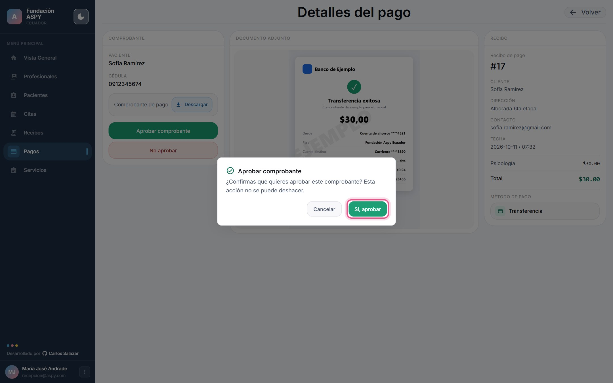
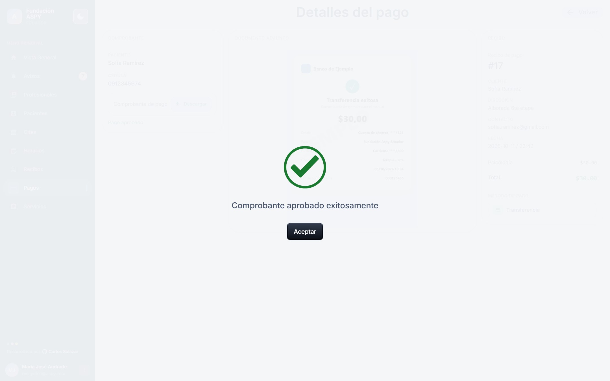
Al aprobar: la cita pasa a Agendada, el recibo queda Generado y el/la paciente lo puede descargar. En la lista, el pago muestra el visto verde.
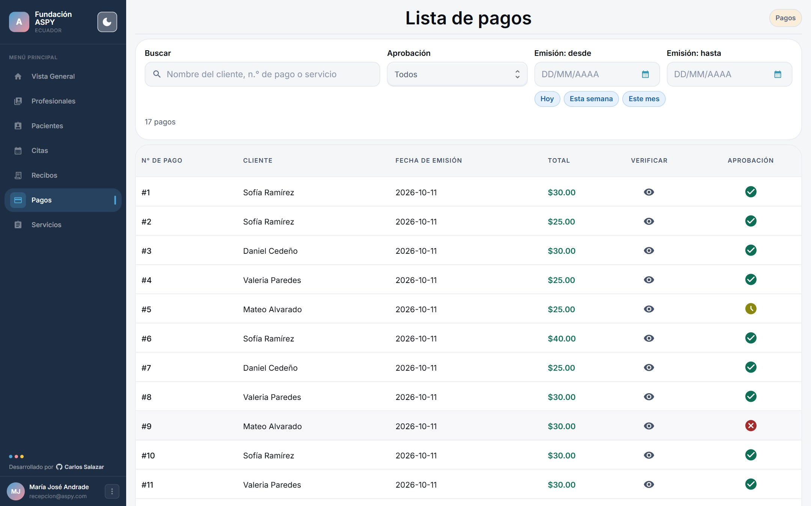
Si el comprobante no es válido
Presiona No aprobar, escribe el motivo del rechazo 1 y confirma con Sí, rechazar 2. Sin motivo el botón no se habilita.
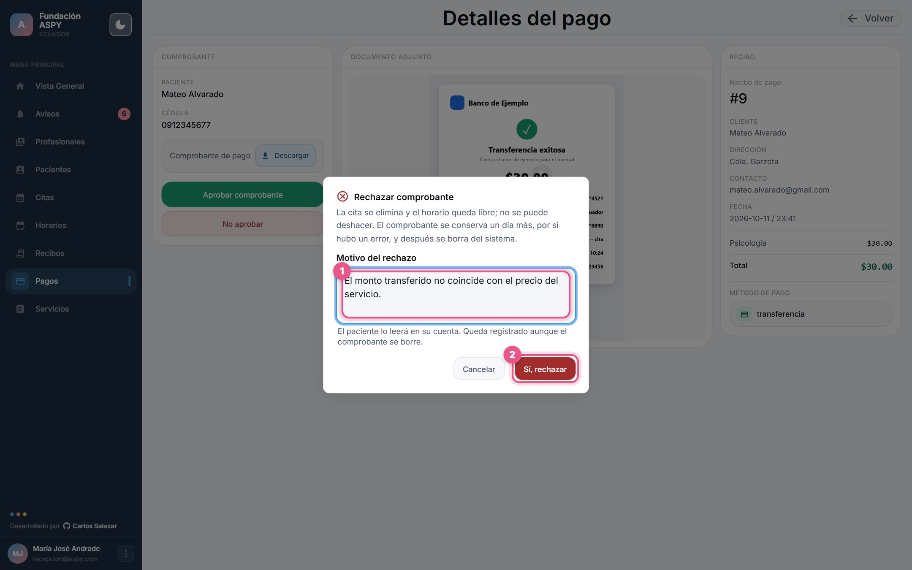
El motivo lo lee el/la paciente en su cuenta, y queda registrado en el pago aunque el comprobante se borre después. Escríbelo claro y con respeto, para que sepa qué corregir: por ejemplo, “El monto transferido no coincide con el precio del servicio” o “La imagen no se puede leer”.
Rechazar no se puede deshacer: la cita se elimina y el horario vuelve a quedar libre. Avisa al/la paciente (por teléfono o WhatsApp) para que agende de nuevo con el comprobante correcto.
El comprobante de un pago rechazado se conserva un tiempo, por si el rechazo fue un error: mientras tanto puedes abrir el pago desde la lista y descargarlo. Ese tiempo lo decide la Administración (un día, salvo que elija otro plazo o que no se borren); la pantalla te dice la fecha y la hora exactas. Después el comprobante se borra solo y el pago queda en la lista con su motivo.
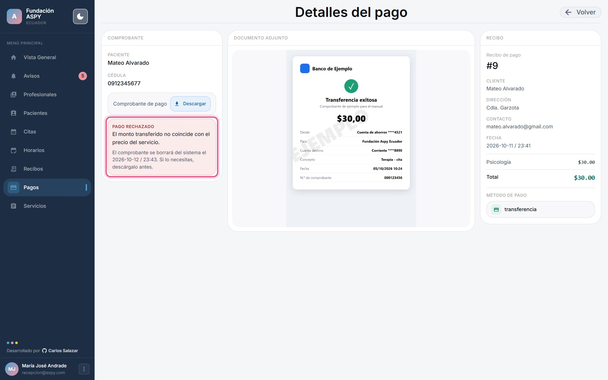
Buscar y filtrar pagos
Arriba de la lista hay una barra para encontrar un pago sin recorrerla entera:
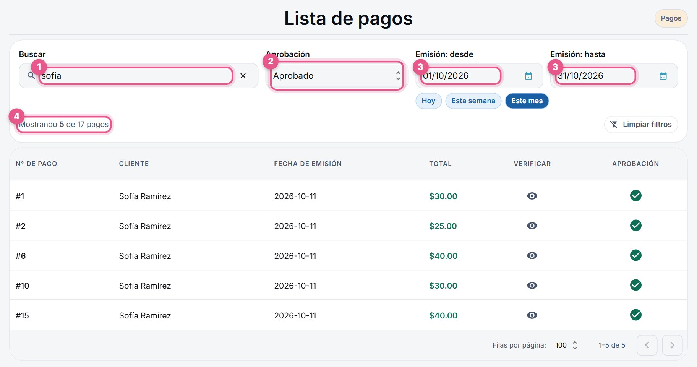
- 1 Buscar: escribe el nombre o el apellido (no importan las tildes ni las mayúsculas), el número de pago o el servicio.
- 2 Aprobación: solo los pendientes, los aprobados o los rechazados.
- 3 Emisión: desde / hasta: un periodo de fechas. Los botones Hoy, Esta semana y Este mes lo llenan por ti.
- 4 Debajo se lee cuántos pagos se muestran del total. Limpiar filtros vuelve a mostrarlos todos.
- A la derecha, PDF y Excel descargan la lista tal como la estás viendo: si pusiste filtros, solo las filas que quedaron. Los dos salen con el logo y los datos de la fundación. En el Excel (archivo .xlsx) la tabla empieza debajo de ese encabezado, con el filtro ya puesto y los montos como números, lista para sumar u ordenar.
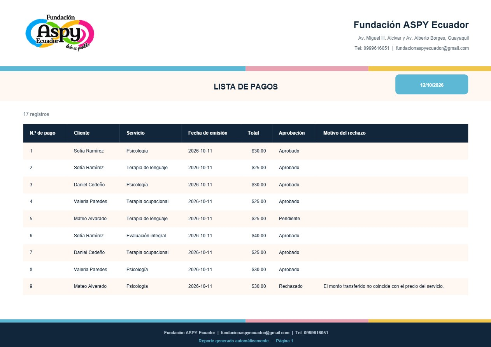
Para empezar el día, elige Aprobación → Pendiente: quedan solo los pagos por revisar. Todas las listas del sistema (recibos, pacientes, profesionales y servicios) tienen una barra igual, con sus botones PDF y Excel.
El calendario de citas
En Citas ves todas las citas de la fundación, con el color de su estado.
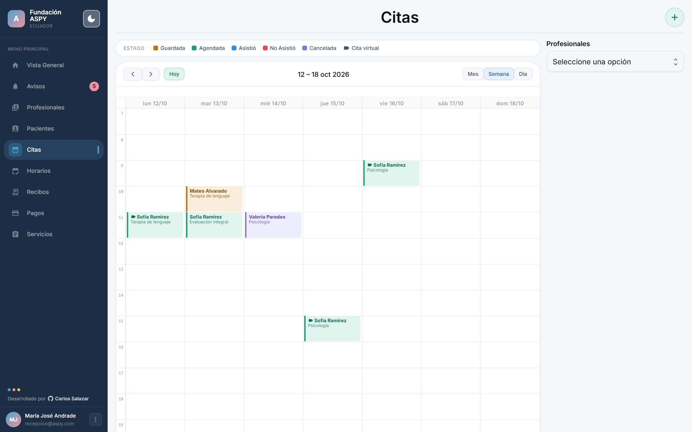
- Las flechas ‹ › cambian de semana; Hoy regresa a la fecha actual; Mes / Semana / Día cambian la vista.
- Con la lista Profesionales (a la derecha) ves solo la agenda de una persona.
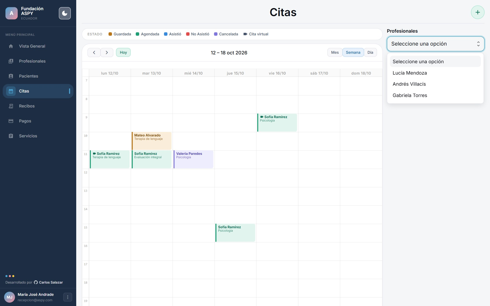
Ver o cancelar una cita
Haz clic en la cita para ver sus datos. Si hace falta, presiona Cancelar cita y confirma con Sí, cancelar: la cita pasa a Cancelada y el horario se libera. La cancelación no se puede deshacer.
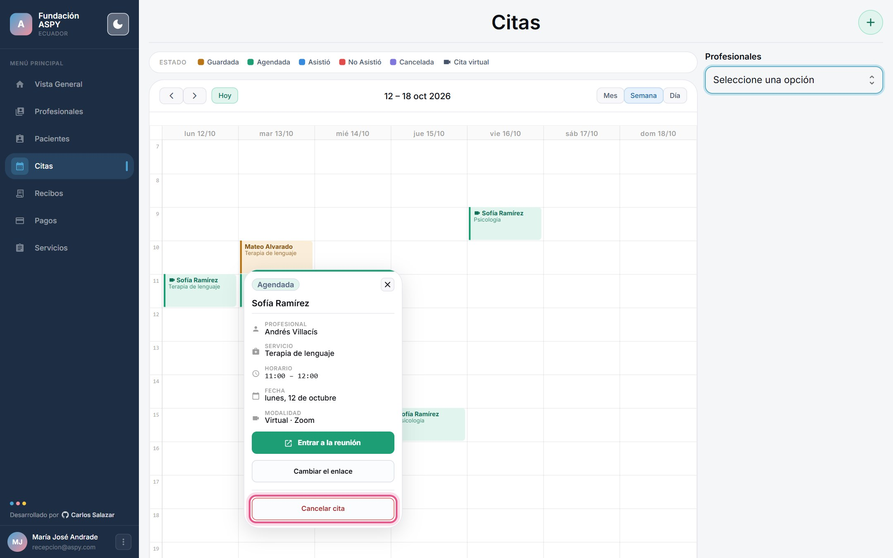
Los/las pacientes solo pueden cancelar con más de 24 horas de anticipación. Tú puedes cancelar en cualquier momento las citas Guardadas o Agendadas; por eso, cuando un/a paciente llame a última hora, tú haces la cancelación.
Citas presenciales y virtuales
Cada cita tiene una modalidad: la de su horario, que eligió el/la profesional al crearlo y que tú aprobaste (capítulo 10). Las virtuales llevan el ícono de una cámara en el calendario, y al abrir cualquier cita se lee Modalidad: Presencial o Virtual.
Si hace falta, tú puedes cambiar la modalidad de una cita (Guardada o Agendada), aunque ya esté reservada:
- De presencial a virtual
Abre la cita y presiona Cambiar a virtual. Pega el enlace de la reunión de Zoom, Microsoft Teams o Google Meet 1 (tiene que empezar con https://; por seguridad, el sistema no acepta enlaces de otros sitios) y presiona Pasar a virtual 2. Si todavía no hay enlace, déjalo vacío: se puede poner después.
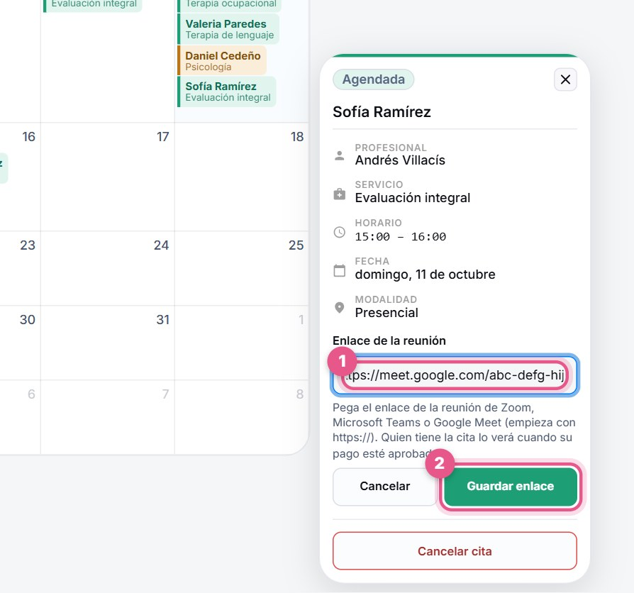
- La cita queda como virtual
El detalle muestra Modalidad: Virtual, con el nombre del servicio de videollamada, y el botón Entrar a la reunión.
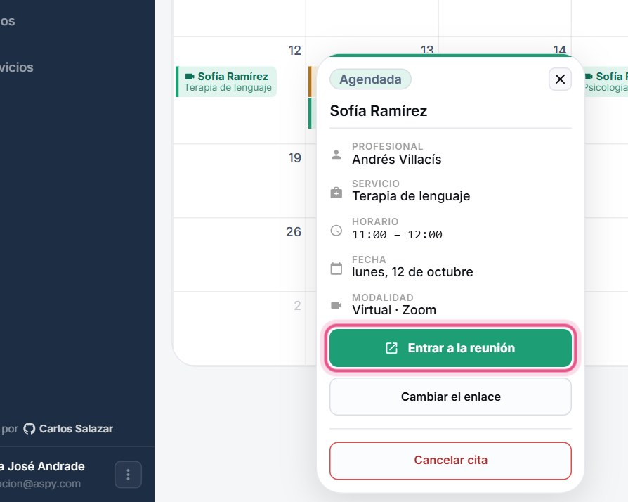
- Cambiar el enlace o volver a presencial
En una cita virtual, Cambiar el enlace (o Poner el enlace, si todavía no tiene) abre el mismo campo. Ahí están también Quitar el enlace (la cita sigue siendo virtual) y Pasar a presencial (se borra el enlace).
- El/la profesional de la cita puede poner o cambiar el enlace desde su agenda, pero la modalidad de una cita ya reservada solo la cambian Secretaría y la administración.
- El/la paciente ve el botón para entrar cuando su pago ya está aprobado (cita Agendada). Mientras la cita está Guardada solo sabe que será virtual.
- Si cambias la modalidad de una cita reservada, avisa a la familia: el sistema no le envía un mensaje.
Agendar una cita para un/a paciente
Útil cuando el/la paciente llama o viene en persona. Es igual a como agenda un/a paciente, con un dato más: a quién es la cita.
- Abre el formulario
Usa el botón + de la pantalla Citas, o Agendar cita en las acciones rápidas del panel.
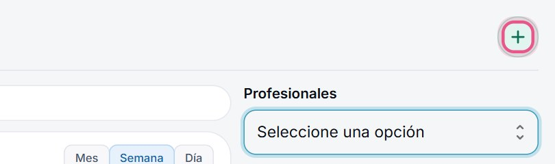
- Elige servicio, profesional y paciente
La lista Paciente muestra a todas las personas registradas y habilitadas.
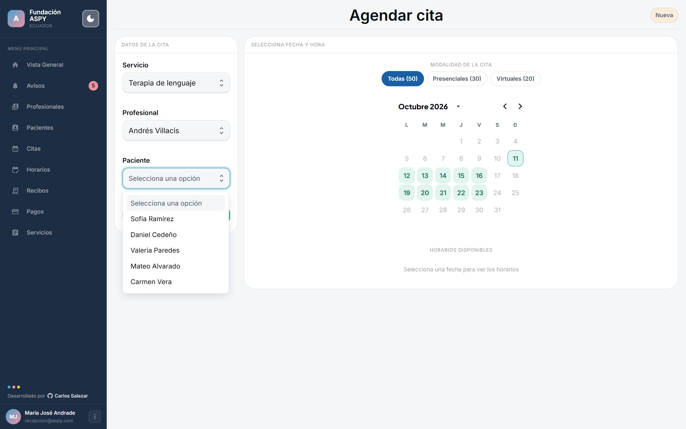
- Elige día y hora, y continúa
Con el/la paciente elegido 1, selecciona un día verde y una hora, y presiona Proceder a pagar 2. Las horas del día salen en dos apartados, Citas presenciales y Citas virtuales; con Modalidad de la cita puedes ver solo unas u otras. Solo se ofrecen los horarios ya aprobados.
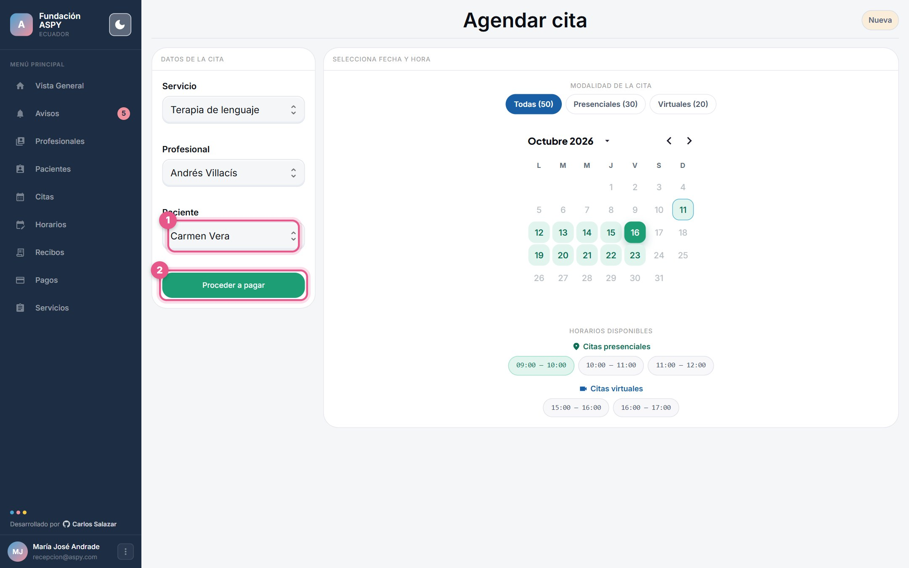
- Sube el comprobante y finaliza
Los pasos de pago son los mismos que hace un/a paciente: subir el comprobante de la transferencia, Continuar y Finalizar reserva. Luego aprueba el pago desde Pagos (capítulo 3).
El sistema siempre pide un comprobante. Si el/la paciente pagó en persona, sube una foto del comprobante físico o del registro de pago de la fundación.
Recibos
En Recibos están los recibos de todos los pagos.
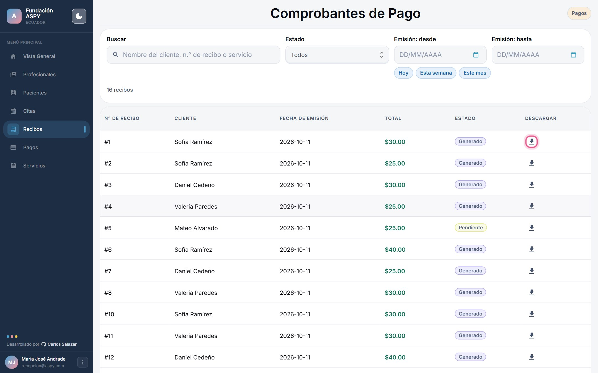
- Generado: el pago fue aprobado.
- Pendiente: el pago aún no se revisa.
- La flecha de la columna Descargar guarda el recibo en PDF, por si un/a paciente te lo pide.
- Al hacer clic en una fila, el recibo se abre a la derecha.
- La barra de arriba busca por nombre, número de recibo o servicio, y filtra por Estado y por las fechas de emisión (con los atajos Hoy, Esta semana y Este mes).
Pacientes
La lista de todas las personas registradas como pacientes (clientes).
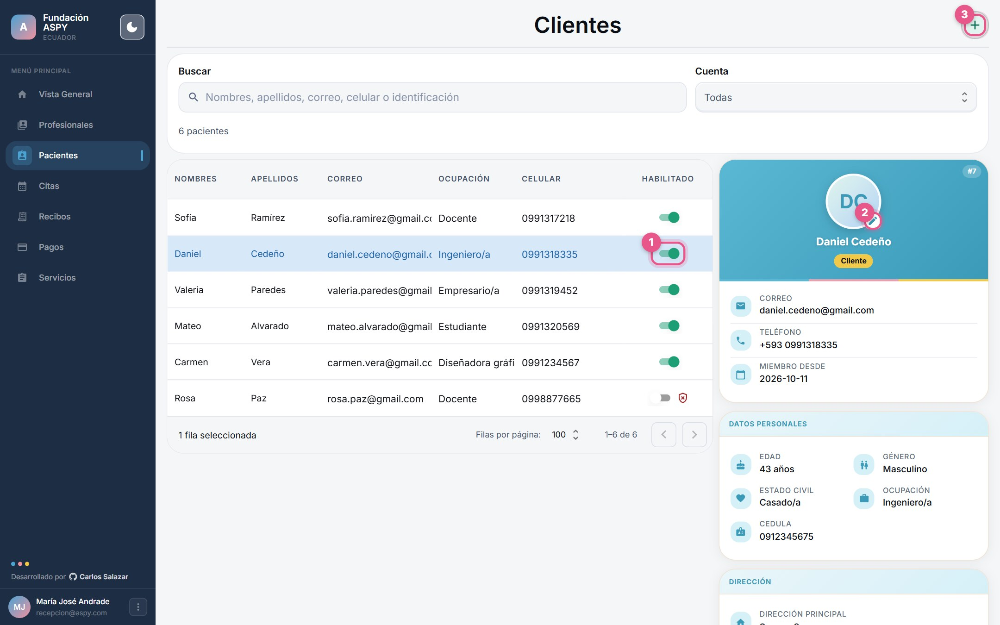
- Con Buscar encuentras a una persona por sus nombres, apellidos, correo, celular o identificación. La lista Cuenta deja solo las habilitadas o solo las deshabilitadas.
- Haz clic en una fila para ver su ficha completa a la derecha.
- 1 El interruptor Habilitado activa o desactiva la cuenta. Una cuenta desactivada no puede iniciar sesión ni aparecer al agendar; si tenía la sesión abierta, se cierra en menos de un minuto y ve el aviso de cuenta deshabilitada. Si junto al interruptor aparece un escudo rojo, esa persona retiró su consentimiento desde Privacidad y mis datos (al pasar el mouse dice la fecha): su cuenta se deshabilitó sola. Avisa a la administración y no la vuelvas a habilitar sin hablar con la persona.
- 2 El lápiz abre el formulario para corregir sus datos.
- 3 El botón + registra un/a paciente nuevo.
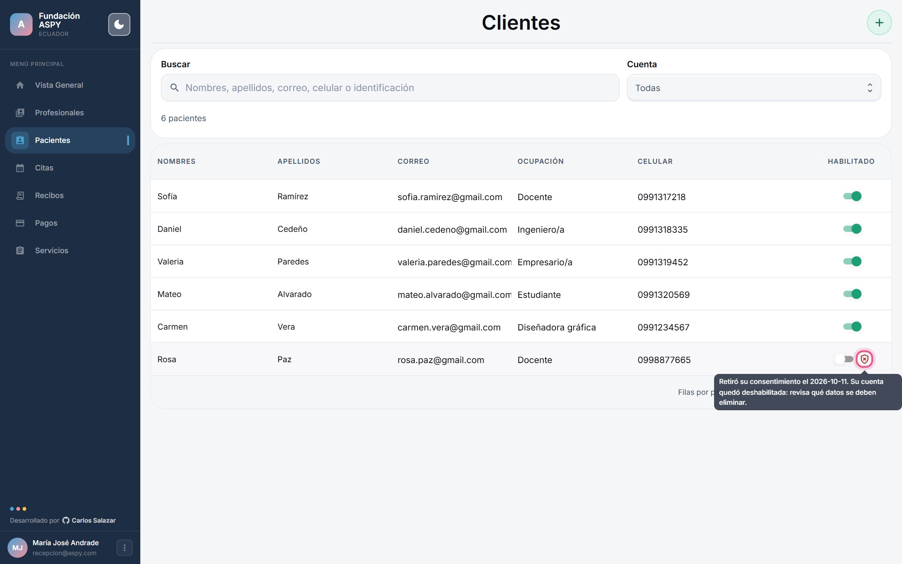
Registrar un/a paciente
Es un formulario de 3 pasos: datos personales, datos generales (contacto y dirección) y seguridad (correo y contraseña). La cédula lleva 10 números, el RUC 13 y el teléfono solo números; si la ocupación no está en la lista, elige Otra y escríbela. La fecha de nacimiento se elige en un calendario (año, mes y día) o se escribe como día/mes/año. Si falta un dato, el campo lo indica en rojo; si el correo ya tiene una cuenta, aparece un aviso arriba del formulario. Entrega al/la paciente su correo y contraseña para que pueda ingresar.
Política de privacidad: tú creas la cuenta, pero la política la acepta la propia persona. La primera vez que entre, el sistema se la muestra y no la deja continuar hasta que la lea, marque las casillas de su consentimiento y la acepte (o cierre sesión). Avísale para que no se sorprenda. Si la cuenta es de una persona menor de 15 años, en ese primer ingreso debe estar su madre, su padre o su representante legal: el sistema pide su nombre y su identificación. Lo mismo pasa con las cuentas de profesionales y de secretaría.
Si alguien olvidó su contraseña: abre su ficha, presiona el lápiz y, en el último paso, escribe una contraseña nueva. Si dejas esos campos vacíos, la contraseña no cambia.
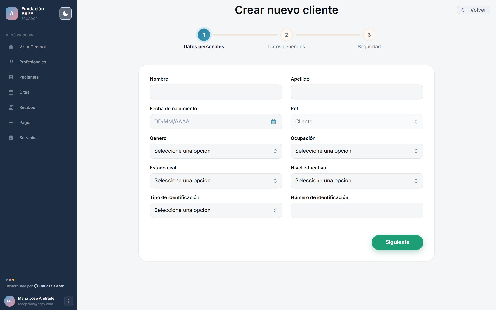
Antes de crear una cuenta, escribe su nombre o su correo en Buscar para ver si la persona ya está en la lista. Así evitas duplicados.
Profesionales
Aquí está el equipo de terapeutas y psicólogos/as de la fundación.
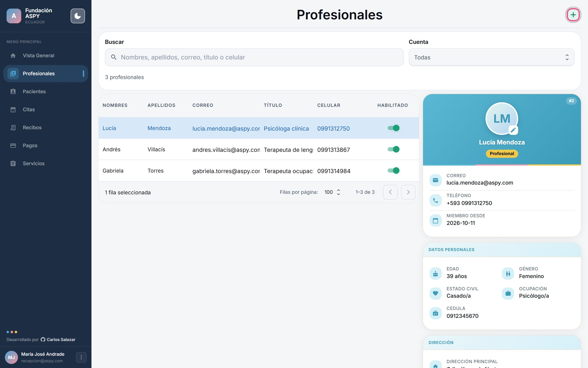
- Clic en una fila para ver su ficha; el interruptor habilita o deshabilita su cuenta.
- La barra de arriba busca por nombres, apellidos, correo, título o celular.
- Con el botón + registras una cuenta profesional nueva. El formulario es igual al de pacientes, con el rol Profesional ya elegido y dos datos más en el segundo paso: título y especialidad.
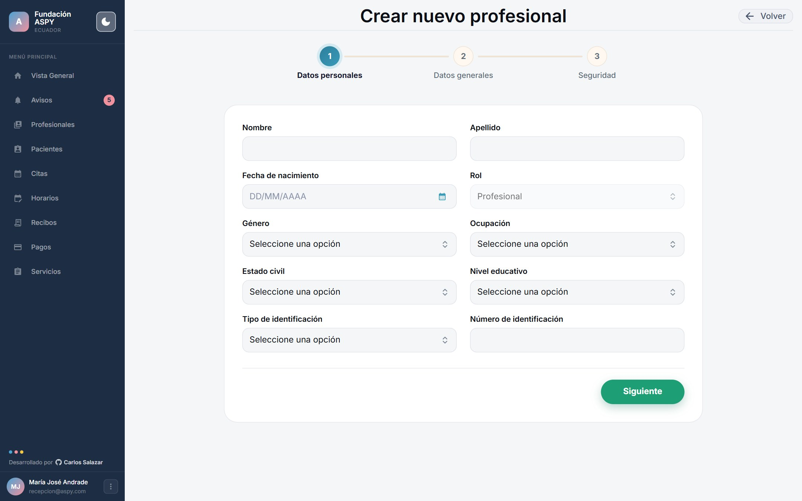
Una cuenta profesional nueva todavía no aparece al agendar hasta que: (1) le asignes un servicio (capítulo 9) y (2) tenga horarios disponibles. Los crea desde su cuenta o, si la administración lo habilitó, se los creas tú (capítulo 10).
Si un/a profesional deja la fundación, deshabilita su cuenta en lugar de borrarla: así se conserva el historial de citas.
Servicios
Los servicios son lo que la fundación ofrece (psicología, terapia de lenguaje…) con su precio por sesión.
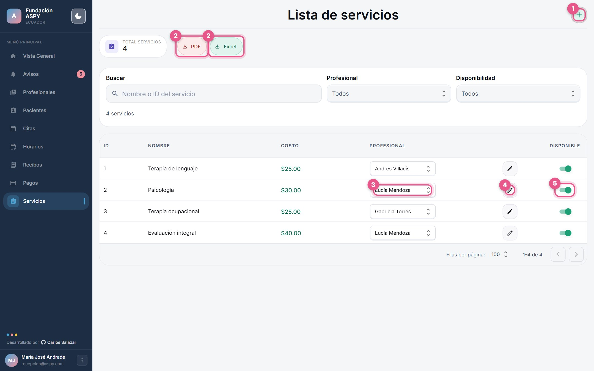
- 1 + crea un servicio nuevo.
- 2 PDF / Excel descargan la lista que estás viendo (con los filtros puestos).
- 3 Profesional: elige quién atiende ese servicio. El cambio se guarda solo.
- 4 El lápiz cambia el nombre o el precio.
- 5 Disponible: si lo apagas, el servicio deja de aparecer para agendar (las citas ya agendadas no cambian).
- La barra de arriba busca por nombre y filtra por profesional asignado (o Sin asignar) y por disponibilidad.
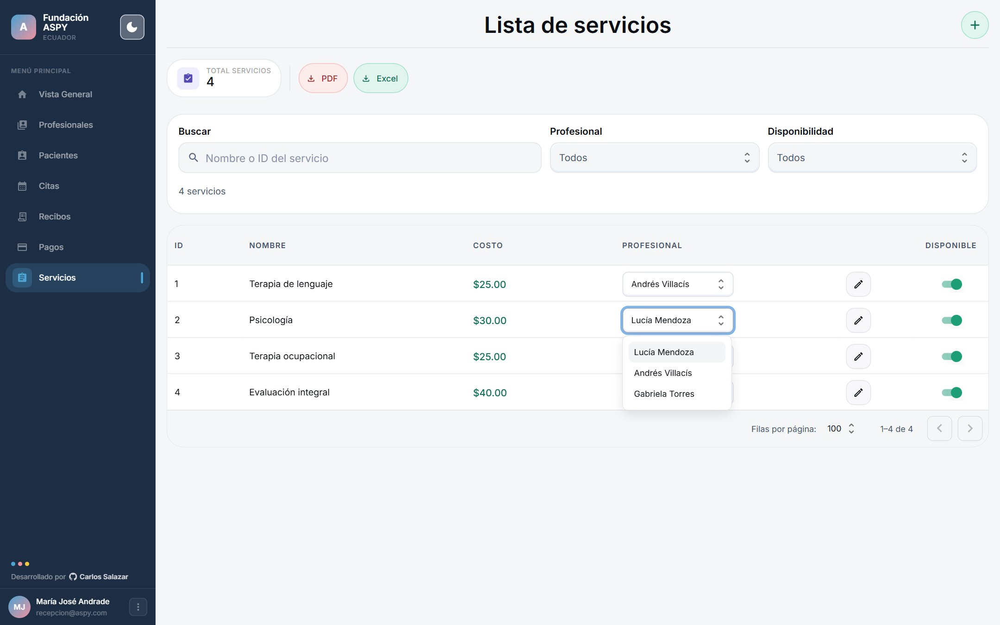
Crear o editar un servicio
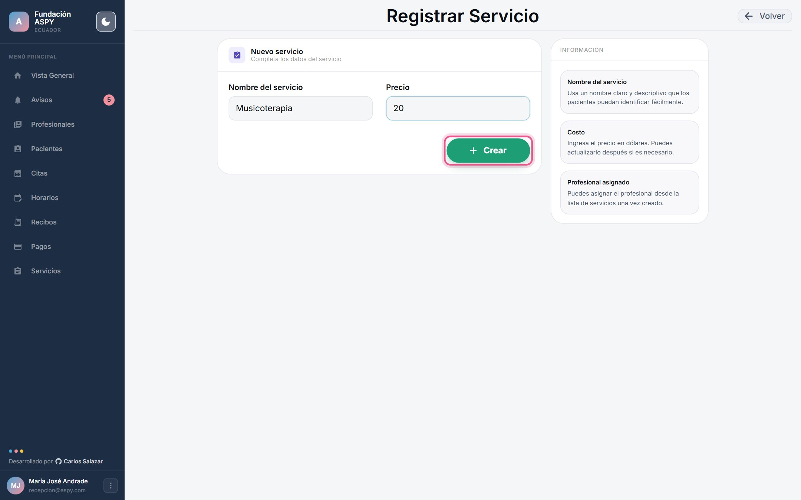
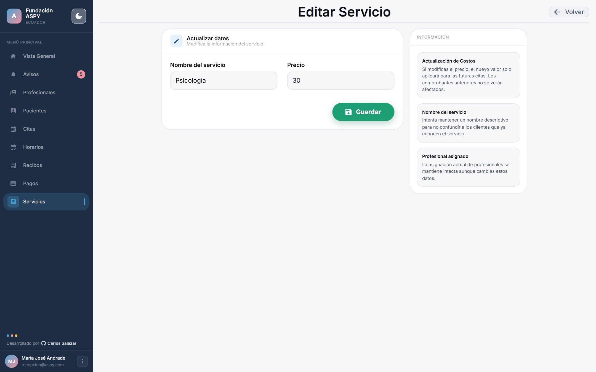
Después de crear un servicio, recuerda asignarle un/a profesional en la lista; si no, nadie podrá agendarlo.
Puedes cambiar el precio cuando haga falta: cada pago guarda el monto que se cobró, así que los recibos e ingresos anteriores no cambian.
Horarios de profesionales
Cada profesional crea sus horarios y dice si los atenderá de forma presencial o virtual. Tú los apruebas: hasta entonces las familias no los ven. Está en Horarios, en el menú de la izquierda.
Aprobar los horarios
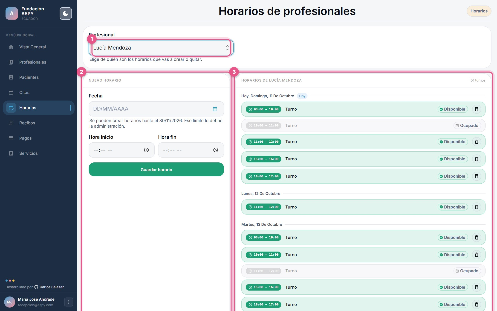
- 1 Cuántos horarios esperan tu revisión. La lista muestra quién lo creó, el día, la hora y la modalidad (Presencial o Virtual, con el servicio de la reunión o el aviso “falta el enlace”).
- 2 Aprobar: desde ese momento el horario se ofrece a las familias para agendar.
- 3 El lápiz abre la modalidad y el enlace, por si hay que corregirlos antes de aprobar.
- 4 Profesional: elige a una persona para ver todos sus horarios (más abajo).
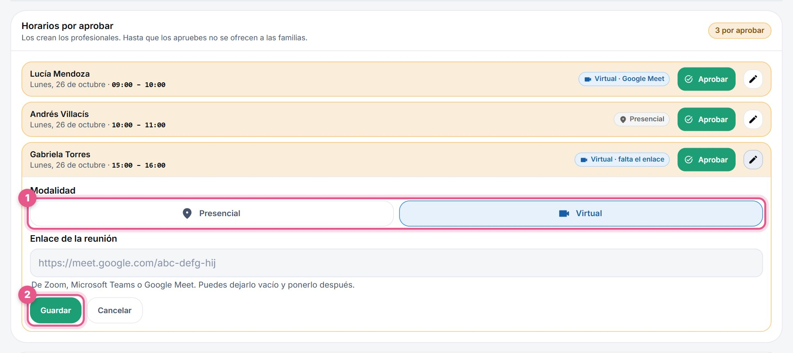
Un horario que no quieras publicar simplemente no lo apruebes: se queda “por aprobar” y nadie puede agendarlo. Avisa al/la profesional para que lo corrija o lo quite. En tu panel, Horarios de hoy te recuerda cuántos tienes pendientes.
Los horarios de una persona
Al elegir un/a Profesional ves todos sus turnos, agrupados por día. En cada uno puedes:
- Aprobar los que estén por aprobar, o Quitar aprobación a uno disponible (deja de ofrecerse hasta que lo apruebes otra vez). A un turno que ya tiene una cita no se le quita.
- Con el lápiz, cambiar su modalidad o su enlace, también si ya tiene una cita (ver Citas presenciales y virtuales, capítulo 4).
Crear o quitar horarios por un/a profesional
Solo si la administración lo habilitó (en Datos bancarios → Horarios de los/las profesionales). Si no, verás un aviso y cada profesional crea los suyos.
- Elige a quién le corresponden
En la lista Profesional 1.
- Completa el turno
Elige la fecha, la hora de inicio, la hora de fin y la modalidad 2 (si es virtual, puedes pegar el enlace), y presiona Guardar horario. Debajo de la fecha se lee hasta qué día se pueden crear horarios: ese límite lo define la administración y es el mismo para profesionales y para Secretaría. Los horarios que creas tú quedan aprobados de una vez.
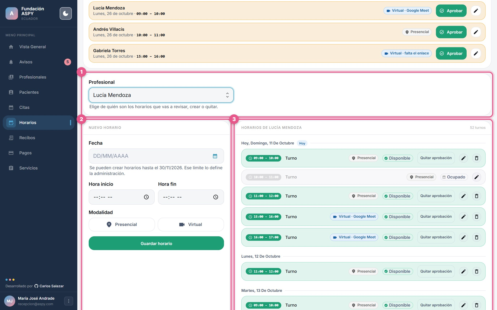
- Revisa sus turnos
A la derecha 3 quedan los turnos de esa persona. Los Disponibles se pueden quitar con el tacho de basura. Los Ocupados tienen una cita: para liberarlos hay que cancelar la cita (capítulo 4).
No se pueden crear horarios en fechas que ya pasaron, ni después del límite, ni que se crucen con otro turno de la misma persona.
Tu cuenta y buenas prácticas
El botón ⋮ junto a tu nombre abre tu Perfil, el Manual de uso, Privacidad y mis datos, Sobre ASPY y Cerrar sesión. También está Privacidad y mis datos, con la política vigente, la fecha en que la aceptaste y tus derechos sobre tus datos.
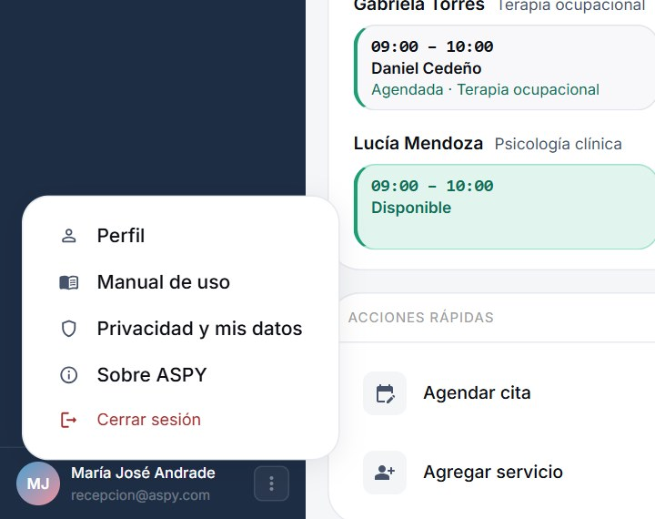
Este manual dentro del sistema
En ⋮ → Manual de uso puedes ver todos los manuales (familias, profesionales, secretaría, administración y página web), para orientar a pacientes y profesionales cuando te pregunten. Elige el manual con las pestañas de arriba. Los/las pacientes y los/las profesionales solo ven el suyo.
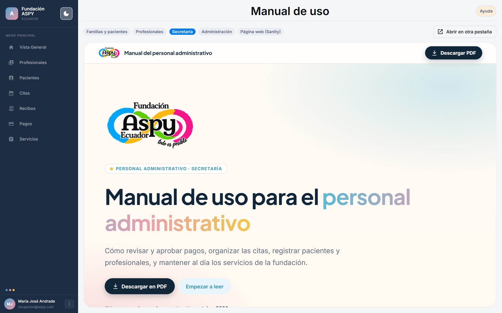
- Revisa Pagos al menos una vez al día para que ningún paciente quede esperando.
- No compartas tu contraseña. Cada persona del equipo debe tener su propia cuenta.
- Cierra sesión si usas una computadora compartida.
- Los datos de los/las pacientes son confidenciales: no los envíes por canales públicos.
- Si el sistema muestra un error extraño, toma una captura de pantalla y envíala a los desarrolladores (sus correos están abajo).
El botón de la luna (arriba a la izquierda; en el celular, arriba a la derecha) activa el modo oscuro.